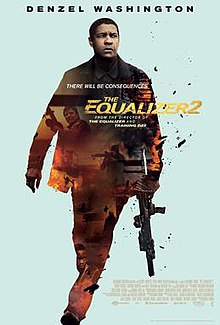

Yasine Jay Koraichi
Programmer
Holder of a master's degree in energy, I wanted to orient myself in the field of computing. I took a course in BI in Paris. today I am following the training Le Wagon to be able to work as a web developer
See for yourselfMy favorite movies
|  |
Equalizer 2Robert McCall serves an unflinching justice for the exploited and oppressed, but how far will he go when that is someone he loves? |
 |
Le loup de Wall StreetBased on the true story of Jordan Belfort, from his rise to a wealthy stock-broker living the high life to his fall involving crime, corruption and the federal government. |
The Raid2A S.W.A.T. team becomes trapped in a tenement run by a ruthless mobster and his army of killers and thugs. |
About this page
This page has been coded during the FullStack program @LeWagon. That was probably the best experience of my entire life.